Tutorial: Creating a Login Manager Application with GWT Designer
This tutorial walks you through the process of creating a simple
GWT application and deploying your module using GWT Designer.
Special thanks to Ronny Bubke for submitting the original tutorial.
Requirements:
Before you can start with the tutorial, you must install a supported version of the following:
Eclipse, Java 1.5 or higher,
GWT Designer (Full stand-alone version), and the
GWT SDK or
Google Plugin for Eclipse (includes GWT SDK)
Note: This tutorial was created in Windows XP using GWT Designer 2.3, GPE 2.3, Eclipse 3.7 & Java 1.6.
Basic steps:
- Set the GWT installation directory
- Create a GWT Java Project and the LoginManager module
- Create the Login Composite
- Create and apply CSS styles
- Add Event Handlers
- Add the Login composite to the LoginManager module
- Run Application in Hosted Mode
- Build and Deploy
If you installed the Google Plugin for Eclipse (GPE), this step is not needed (GWT Designer will just use the SDK
included with the GPE). Do this only if you downloaded the stand-alone GWT SDK zip file.
The path would be the directory you unzipped the GWT SDK to (the dir just above the /doc subdirectory).
Open the GWT Preference page, select Window > Preferences > WindowBuilder > GWT.

Select File > New > Project from the
Eclipse top level menu to open the new project wizard dialog.
Expand WindowBuilder > GWT Designer > Model and
select GWT Java Project from the list of wizards.
Click Next to continue.
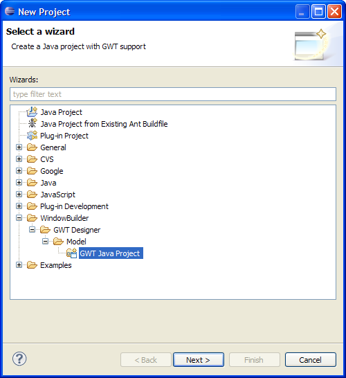
Enter LoginManager as the Project name and click Next.
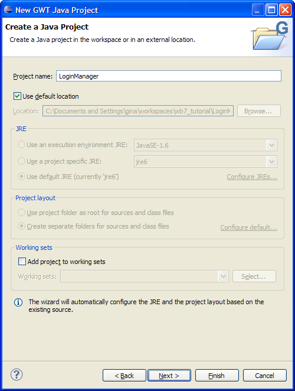
Check the option to Create a GWT Module.
Enter LoginManager as the Module name.
Modify the package name to com.gwt.tutorial.LoginManager
Click Finish.

A LoginManager GWT project is created and configured. The LoginManager file is opened and you should see Source
and Design tabs at the bottom of the LoginManager view. If you don't see the tabs, right-click on the Java class and select Open With > WindowBuilder Editor.
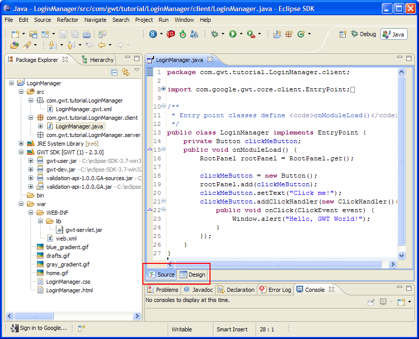
To start designing your UI using GWT Designer, click the Design tab. Below is GWT Designer's Design view.
Top left corner of the LoginManager is the Components view.
Below the Components view is the Properties view. In the middle is the Palette and to the right is your UI.

First, we need to create a Composite for the Login application.
Select the Designer toolbar button and select GWT > GWT Java UI > Composite from the pull-down menu.
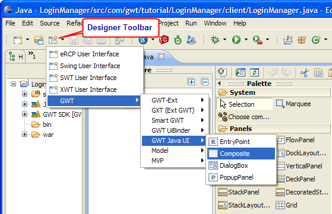
Enter Login as the name of the Composite and click Finish.
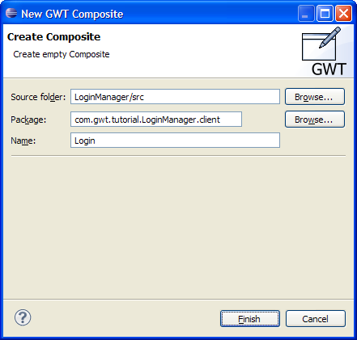
Composite created and opened in Source mode.
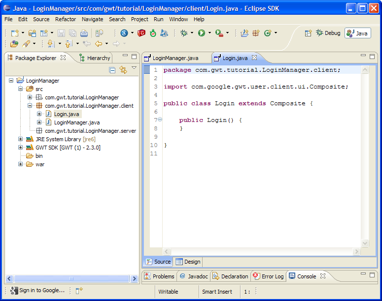
Switch to Design mode and Add a VerticalPanel
to the Composite.
Click on the VerticalPanel from the Palette and drop it
onto the Composite (hover the mouse on the Composite and click the left-mouse button to place the component). You should now see an empty VerticalPanel.
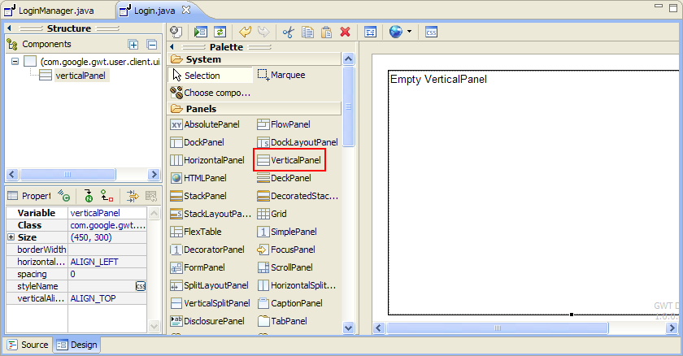
Add a Label widget to the VerticalPanel.
On the Palette, scroll down to the Widgets category and click on the Label widget from the Palette and drop it onto
the Vertical Panel.
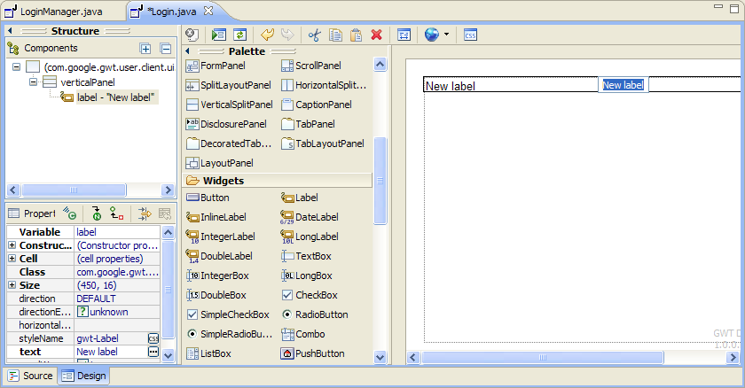
Replace the default label text to Sign in to your account and press Enter. That sets the text property of the Label widget.
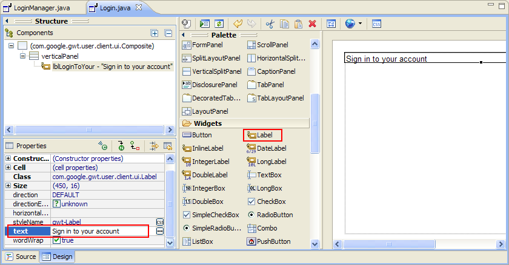
To easily structure the widgets, add a FlexTable
panel.
In the Panels section on the Palette, click Flextable and place it into the VerticalPanel.
Add the following widgets to the FlexTable and arrange it
as follows:
Add a Label and change the text property to Username:
Add a TextBox next to the Username and change the
variable property to textBoxUsername.
Add another Label below the Username and change the
text property to Password:
Add another TextBox next to the Password and change the
Variable property to textBoxPassword.
Add a CheckBox below the Password and change the text
property to Remember me on this computer.
Add a Button below the checkbox and set the text property to Sign
In.
Save your work.You should end up with something like this screen.
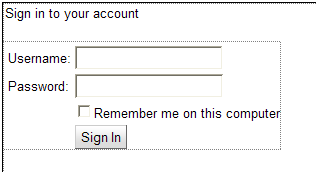
Let's create a CSS style for the Label widgets.
Click on the CSS toolbar item to open the CSS Style Editor.
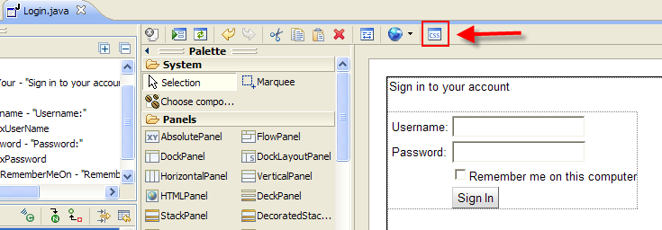
The CSS Style Editor opens.
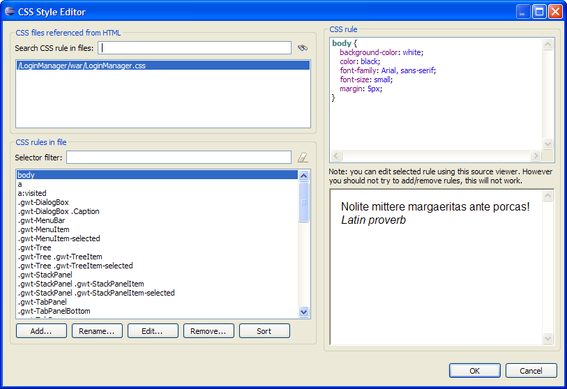
Click the Add...button to open the New rule dialog.
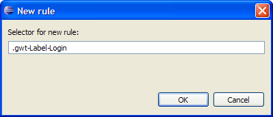
Change the name to .gwt-Label-Login and click OK.
With the .gwt-Label-Login selected, click the Edit... button.
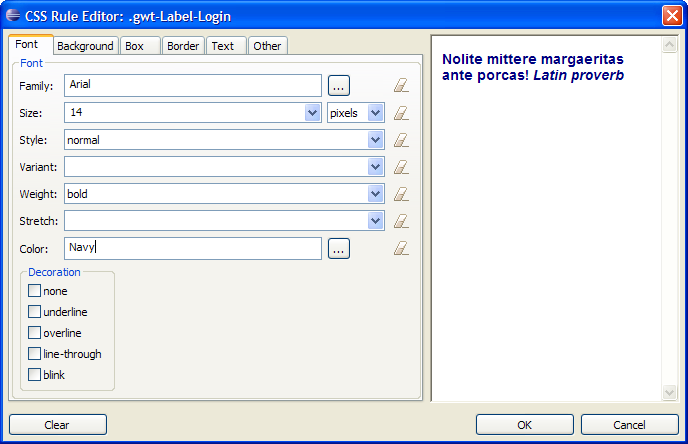
Set any attributes you want and click OK.
When you're done, you should have something similar to this:
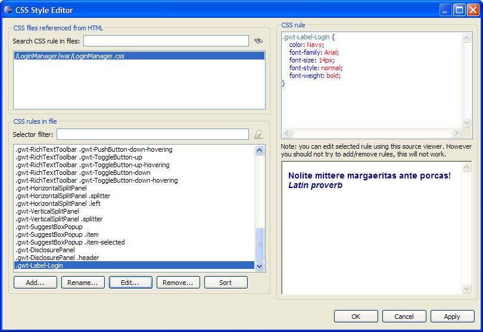
Click OK to close the CSS editor.
Select each of the Label widgets and set the styleName property to .gwt-Label-Login.
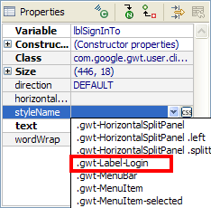
Following the same procedure, create a style for the checkbox and set the styleName property.
Open the Login class and this is how it looks like with some css
styling. Make sure to Save your work.
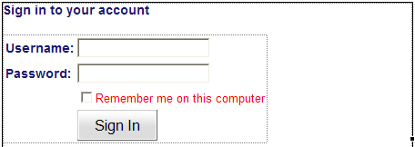
First, let's convert the text boxes from local to field
variables.
Still on the Login class, switch to Design mode, select the Username text box and click the Convert local to field button from the properties pane. Do the
same with the Password text box.
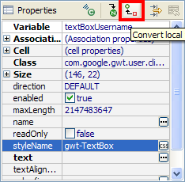
Now, let's add an onClick event for the "Sign In" button.
Right-click the Sign In button and select Add
event handler > click > onClick.
As you can see a ClickHandler has been added and all you
have to do is implement the onClick event.
Add the following import statement:
import com.google.gwt.user.client.Window;
then add the following code into the onClick() event:
if (textBoxUsername.getText().length() == 0
|| textBoxPassword.getText().length() == 0) {
Window.alert("Username or password is empty.");
}
Save your code.
Open the LoginManager in Design mode and delete the
initial Click me! button. You should now see an empty module with
the default rootPanel.
Add a HorizontalPanel within the rootPanel. Drag
the bottom right corner of the HorizontalPanel to make it bigger.
Add a VerticalPanel to the HorizontalPanel.
Add a Label to the VerticalPanel and set the Label's text property to Welcome to my login page
and the styleName property to .gwt-Label-Login.
To add the Login composite to the module, select Choose Component from the Palette.
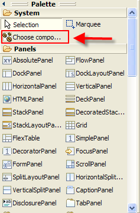
In the Open type search dialog, enter Login and select the Login - com.gwt.tutorial.LoginManager.client item and click OK.
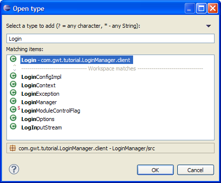
Place the widget in the LoginManager inside the HorizontalPanel
as shown.

Click Save.
In the Package explorer, right-click the LoginManager and
select Run As > GWT Application.
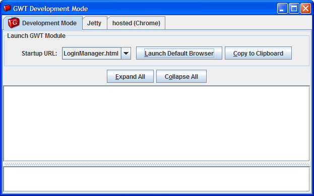
Click the Launch Default Browser button.
Click the Sign In button. A message dialog should come up.
You should now see the LoginManager application similar to the screen below.
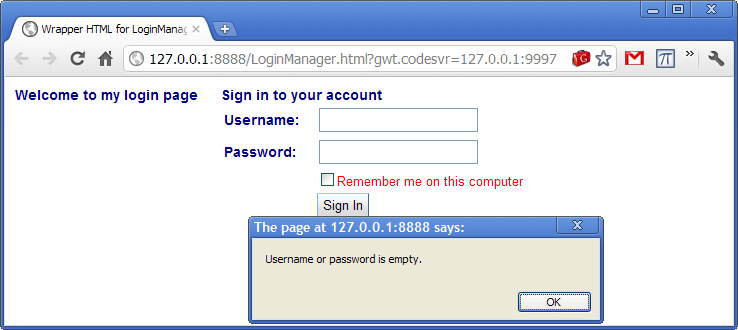
Close the application.
Select the LoginManager and click click on the Deploy Module button in the main Eclipse toolbar to open the Deployment dialog
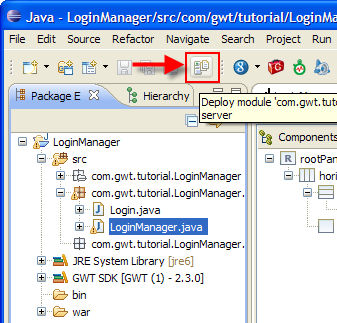
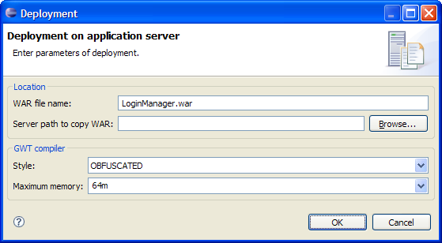
Specify the server deployment options and click OK.
For more information on deploying to your server, see the Google Website and forums.
You can download the complete source code here.
Related topics:
GWT Preferences
GWT Java Project Wizard
GWT Composite Wizard
CSS Support
Application Launching
Build & Deployment
For corrections/bug reports/questions regarding this tutorial, use the GWT Designer forum.